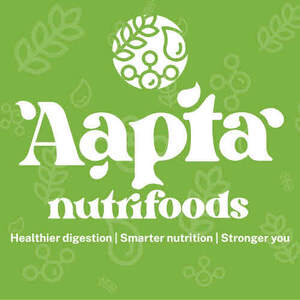
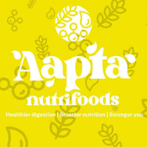

Trade Mark Journal No.2025/021 23 May 2025
UK00004198901 5 May 2025 (5,29,30)
Mark 1

Mark 2

- Class 5
- Nutritional supplements; Dietary and nutritional supplements; Dietary food supplements; Nutritional supplement energy bars; Liquid nutritional supplements; Food supplements; Health food supplements for persons with special dietary requirements; Protein dietary supplements; Dietary fiber to aid digestion; Anti-oxidant food supplements; Vitamin and mineral food supplements; Protein powder dietary supplements; Dietary supplement drinks.
- Class 29
- Snack food (Fruit-based -); Vegetable-based snack food; Vegetable-based snack foods; Nut-based snack foods; Soy-based snack foods; Sweet corn-based snack foods; Fruit based snack foods; Potato crisps in the form of snack foods; Nut-based food bars; Potato snacks; Suet for food; Jellies for food; Jellies for food, other than confectionery; Soy-based food bars; Fruit snacks; Vegetable fats for food; Vegetable crisps; Lentils; Tofu-based snack food; Plant-based milk substitutes; Protein milk; Non-dairy milk substitutes.
- Class 30
- Cereal-based snack food; Snack food (Cereal-based -); Rice-based snack food; Snack food (Rice-based -); Corn-based snack foods; Rice-based snack foods; Grain-based snack foods; Wheat-based snack foods; Snack food products made from rice; Snack food products made from cereal starch; Snack food products made from cereals; Cereal based snack foods; Snack food products made from cereal flour; Cereal snack foods flavoured with cheese; Multigrain-based snack foods; Snack food products made from potato flour; Snack foods prepared from maize; Snack food products made from rice flour; Oat-based food; Snack foods made from corn; Cereal based prepared snack foods; Snack foods prepared from potato flour; Snack food products made from rusk flour; Snack food products made from maize flour; Snack food products made from soya flour; Flavourings of almond for food or beverages; Snack foods made from cereals; Snack food products consisting of cereal products; Snack foods made from wheat; Snack foods made of wheat; Flavourings of tea for food or beverages; Chocolate-based ready-to-eat food bars; Cereal breakfast foods; Ready to eat savory snack foods made from maize meal formed by extrusion; Cereal-based snack bars; Cereal snacks; Sugar candy [for food]; Starch for food; Food seasonings; Syrup for food; Wafers [food]; Glucose for food; Chocolate food beverages not being dairy-based or vegetable based; Fructose for food; Food flavourings; Honey [for food]; Flavourings of lemons for food or beverages; Rice snacks; Flour for food; Cereal-based savoury snacks; Snack foods consisting principally of bread; Cereal based food bars; Snack foods made of whole wheat; Edible gold for decorating food and beverages; Maltose for food; Molasses for food; Tortilla snacks; Rice cake snacks; Glutamate for food; Snack foods made from corn and in the form of puffs; Snack foods consisting principally of grain; Lentil pasta; Lentil flour; Crispbread snacks; Mung bean porridge; Mung bean flour; Mung bean pancakes (bindaetteok); Fava bean flour; Soya bean paste; Bean flour; Flour of millet; Millet cakes; Cakes of sugar-bounded millet or popped rice (okoshi).
Shubhamkumar Mahendrabhai Baviskar